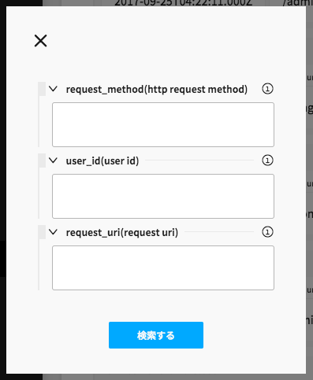

監査ログを閲覧する
Vironサーバへのリクエストは監査ログに保存されます。 Vironには監査ログを閲覧するためのUIがあり、ログの閲覧/検索が可能です。
監査ログを検索する
Step1 - Viron 監査ログ コンポーネントを開く

左カラムのViron 監査ログボタンをクリックしてコンポーネントを開きます。
Step2 - 検索 ポップアップを開く

コンポーネント右上部の をクリックしてポップアップを開きます。
をクリックしてポップアップを開きます。
Step3 - 検索条件を入力する

必要な情報を入力して検索を行います。
- request_method
- HTTPメソッドです。特定の操作のみ検索できます。
- ex) POST
- user_id
- ユーザID(メールアドレス)です。特定のユーザによる操作のみ検索できます。
- request_uri
- HTTPリクエストURIです。特定のリソースに対する操作のみ検索できます。
- ex) /user